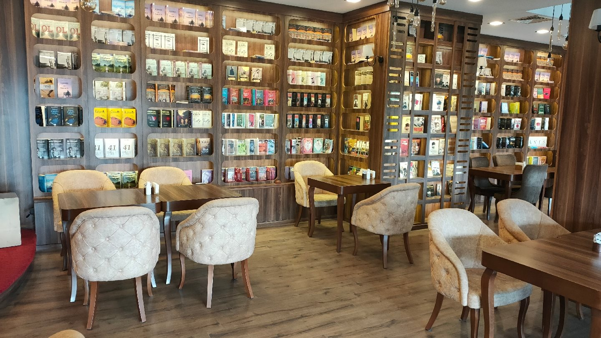
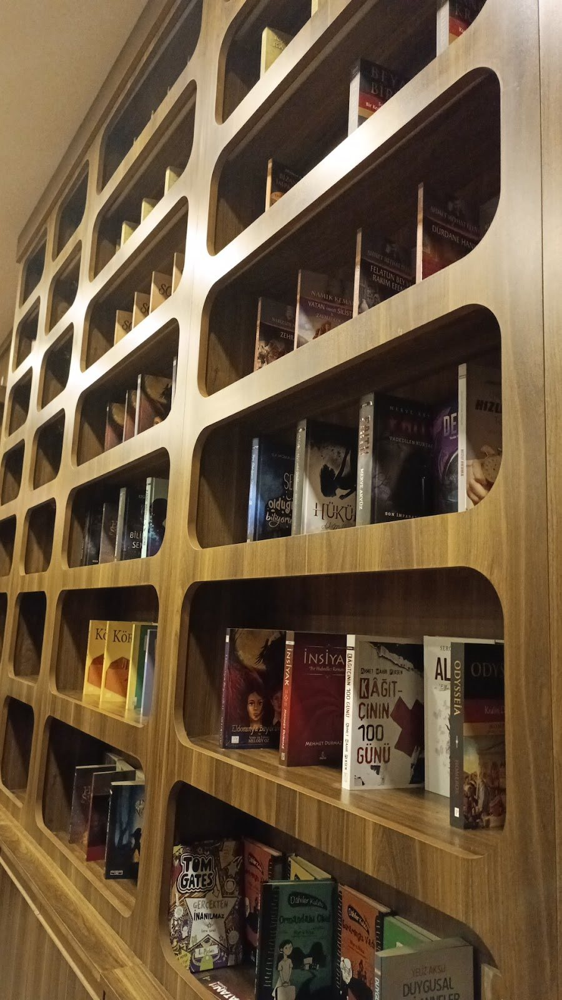
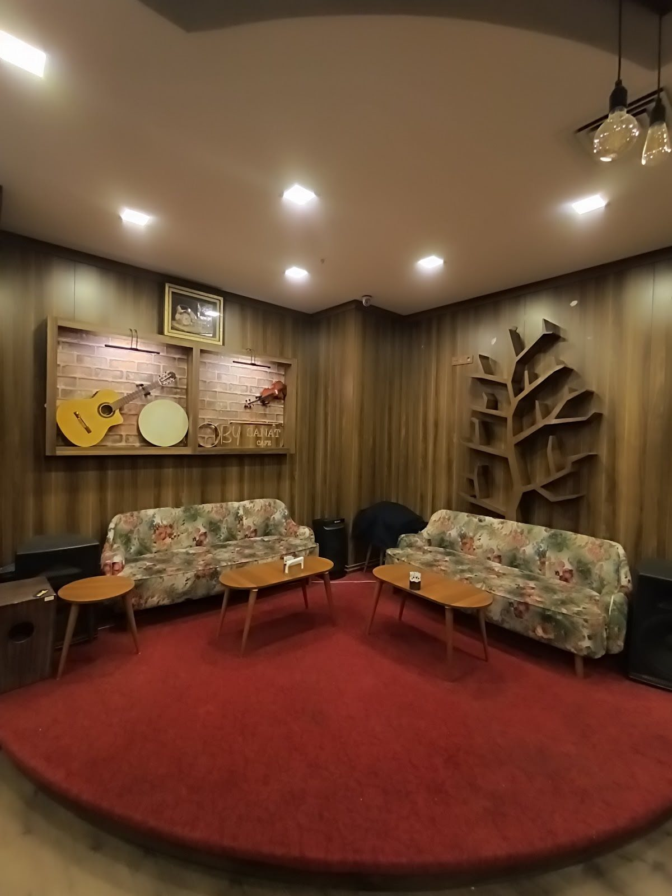

Google yorumu ★★★★★
“Çok sakin ve güzel bir atmosferi var. Duvarları kitaplarla dolu. Çayınızı içerken kitap karıştırabilirsiniz.”Maviş A.Yorumun tamamı

Beylikdüzü Atatürk Kültür ve Sanat Merkezi
Kitapların arasında bir mola.
Paylaşacak sözü olanlarla bir masa.
BY Sanat Cafe
Bir kitap sayfasına göz gezdirin, arkadaşınızla sohbete dalın. BY Sanat’ta kahve molasının yanına biraz da merak ekleyin.
Beylikdüzü Atatürk Kültür ve Sanat Merkezi’nde, günün temposundan kısa bir ara verelim.
BY Sanat’a yol tarifi

Sanatın etrafında.
Kahvenin yanında kültür ve sanat buluşmalarına da yer var. BY Sanat’ın güncel etkinlik programını işletmeden öğrenebilirsiniz.
Tarih, başlangıç saati ve katılım koşulları hakkında bilgi almak veya kendi buluşmanız için uygunluğu sormak isterseniz bizi arayın.
Bir fincanlık ara.
Günün arasında bir çay ya da kahve, yanında uzayan bir sohbet. Kitapların arasında kendinize biraz zaman ayırın.
Menü hakkında bilgi alınGoogle yorumları
Google yorumu ★★★★★
“Çok sakin ve güzel bir atmosferi var. Duvarları kitaplarla dolu. Çayınızı içerken kitap karıştırabilirsiniz.”Maviş A.Yorumun tamamı
Google yorumu ★★★★★
“Harika insanlar, sakin ve huzurlu bir atmosfer. Etkinlikleri ve katılımcıları da harika.”Engin M.Yorumun tamamı
Google yorumlarından kısa alıntılar. Puan ve yorum sayısı 2 Kasım 2026 tarihinde kontrol edilmiştir.
Çalışma saatleri, menü ve etkinlik programındaki güncellemeler için telefonla bize ulaşabilirsiniz.